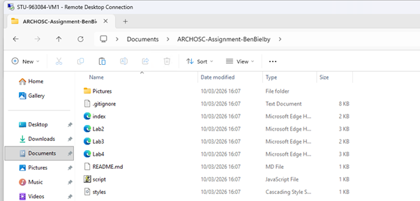
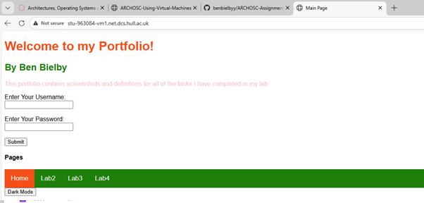
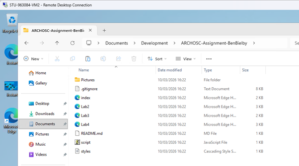
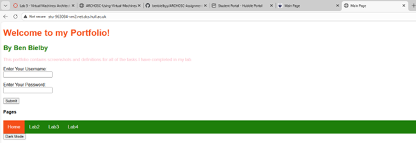
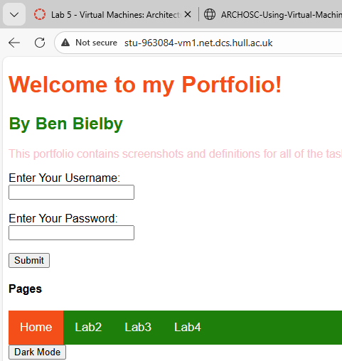
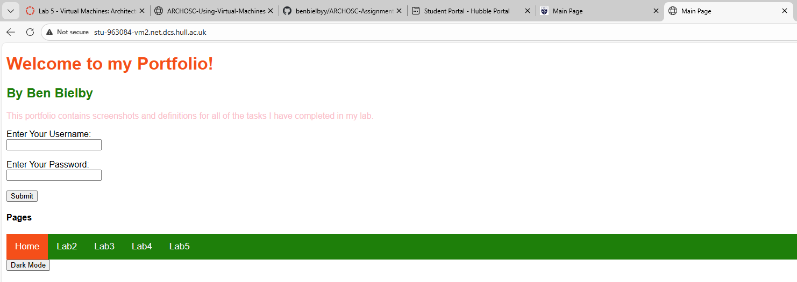

The first thing I did in this lab was use the windows remote desktop tool to connect to a VM and then install git. Using git I then cloned my online repo into the documents folder using the git clone command.

I then copied my website files into the wwwroot folder and checked that everything worked by entering the new website address on my local machine.

Next, I opened a new remote desktop connection and went through the steps of installing git again. I made a new folder in documents called ‘Development’ and cloned my repo inside, before copying it into the wwwroot folder once again.


Finally, I used my development VM to make a change to the website - which was adding a fifth page for todays lab. I believe it is advantageous to have a development and deployment server so that you can make changes on the development server and test it seperately from what the client/user is able to see on the main deployment website. When all changes are ready you can copy or pull the files onto the deployment server once you have checked all changes are ready.

